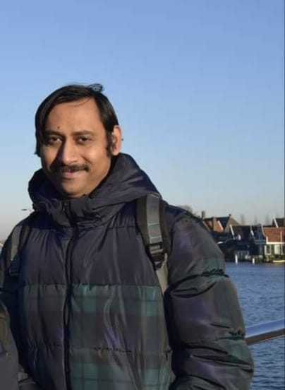

I am currently working as an Associate Professor in Data Science at the West Bengal National University of Juridical Sciences (WBNUJS), Kolkata. Prior to this, I served as an Associate Professor in the Department of Computer Science and Engineering at the Ghani Khan Choudhury Institute of Engineering & Technology (GKCIET), a Centrally Funded Technical Institute (CFTI) under the Ministry of Education, Government of India.
I also held the position of Junior Professor at the Universität Bielefeld, Bielefeld, Germany. Additionally, I worked as an Assistant Professor in the Department of Computer Science and Engineering at Aliah University, Kolkata, for 10 years.
I was a Stipend Scholar at the Genome Data Science group at the Universität Bielefeld, Bielefeld, Germany, where I worked remotely from India for six months. Before that, I spent one year and two months as a postdoctoral fellow in the Life Science and Health group at the Centrum Wiskunde & Informatica (CWI), The Netherlands, under the prestigious ERCIM (European Research Consortium for Informatics and Mathematics) fellowship program.
I earned my Ph.D. from Jadavpur University while conducting research at the Machine Intelligence Unit of the Indian Statistical Institute (ISI), Kolkata. During this time, I also worked as a Junior Research Fellow for one year and two months.
My research interests include deep learning models in single-cell genomics, explainable AI, and big data systems in life sciences and health informatics.
.
Publication
Peer-Reviewed Books and Journal Papers

"Multiobjective Optimization Algorithms for Bioinformatics"
A. Mukhopadhyay , S. Ray , U. Maulik , S. Bandyopadhyay
Springer,May, 2024, ISBN:978-981-97-1630-2
Read

"Enhancing Single-Cell RNA-seq Data Completeness with a Graph Learning Framework"
S. Lall, S. Ray and S. Bandyopadhyay,
IEEE/ACM Transactions on Computational Biology and Bioinformatics, doi: 10.1109/TCBB.2024.3492384, 2024,
Read

"Systematic mining of patterns of polysubstance use in a nationwide population survey"
S. Ray*, M. Desai, and S. Pyne,
Computers in Biology and Medicine, Volume 151, Part A, December 2022, 106175
Read

"Deep variational graph autoencoders for novel host-directed therapy options against COVID-19"
S. Ray*, S. Lall, A. Mukhopadhyay, S. Bandyopadhyay, and A. Schönhuth,
Artificial Intelligence in Medicine, Volume 134, December 2022, 102418.
Read

"A deep integrated framework for predicting SARS-CoV2–Human protein-protein interaction"
S. Ray*, S. Lall, and S. Bandyopadhyay,
IEEE Transactions on Emerging Topics in Computational Intelligence, doi: 10.1109/TETCI.2022.3182354., 2022
Read

"A regularized multi-task learning approach for cell type detection in single RNA sequencing data"
P. Upadhyay and S. Ray*,
Frontiers in Genetics, 13 April 2022, https://doi.org/10.3389/fgene.2022.788832
Read

"A topology preserving graph convolution network for clustering of single-cell RNA seq data"
S. Lall, S. Ray*, and S. Bandyopadhyay,
PLoS Computational Biology, 18(3): e1009600. https://doi.org/10.1371/journal.pcbi.1009600, 2022.
Read

"LSH-GAN enables in-silico generation of cells for small sample high dimensional scRNA-seq data."
S. Lall, S. Ray*, S. Bandyopadhyay,
Nat. Communication Biology, 577 (2022). https://doi.org/10.1038/s42003-022-03473-y.
Read

"sc-REnF: An entropy guided robust feature selection for clustering of single-cell rna-seq data"
S. Lall, A. Ghosh, S. Ray*, S. Bandyopadhyay,
Briefings in Bioinformatics, bbab517, https://doi.org/10.1093/bib/bbab517, 2022.
Read

"Pan-cancer classification by regularized multi-task learning."
SMM Hossain, L. Khatun, S. Ray*, and A. Mukhopadhyay,
Scientific Reports, 11, 24252 (2021).
Read
"RgCop-A regularized copula based method for gene selection in single cell rna-seq data"
S. Lall, S. Ray*, S. Bandyopadhyay,
PLoS Computational Biology, 17(10): e1009464. https://doi.org/10.1371/journal.pcbi.1009464, 2021.
Read

"Identification of key immune regulatory genes in HIV-1 progression"
SM. Hossain, L. Khatun, S. Ray*, A. Mukhopadhyay
Gene, Volume 792, 5 August 2021, 145735
Read

"Differential Patterns of Social Media Use Associated with Loneliness and Health Outcomes in Selected Socioeconomic Groups"
P. Gharani, S. Ray, M. Aruru, and S. Pyne
J. Technol. Behav. Sci., 2021
Read
"Discovering Key Transcriptomic Regulators in Pancreatic Ductal Adenocarcinoma using Dirichlet Process Gaussian Mixture Mode"
M. Hossain, AA. Halsana, L. Khatun, S. Ray*, and A. Mukhopadhyay
Scientific Reports, 7853 (2021)
Read

"DTI-SNNFRA: Drug-target interaction prediction by shared nearest neighbors and fuzzy-rough approximation"
M. Islam, M. Hossain, and S. Ray*
PLoS ONE, February 19, 2021
Read

"Clustering patterns connecting COVID-19 dynamics and Human mobility using optimal transport"
F. Nielsen, G. Marti, S. Ray, and S. Pyne
Sankhya B, February, 2021
Read

"CODC: A copula based model to identify differential coexpression"
S. Ray, S.Lall, and S.Bandyopadhyay
npj System Biology and Applications, 6, 2020
Read

"Transition from Social Vulnerability to Resiliency vis-à-vis COVID-19"
S. Pyne, S. Ray, R. Gurewitsch, M. Aruru
Statistics and Applications, Vol.18, pp-197-208, 2020
Read
"Colored Network Motif Analysis by Dynamic Programming Approach: An Application in Host-Pathogen Interaction Network"
S.Biswas, S. Ray*, and S.Bandyopadhyay
IEEE/ACM Transactions on Computational Biology and Bioinformatics, 2019
Read

"Computational prediction of HCVhuman protein-protein interaction via topological analysis of HCV infected PPI module"
S. Ray, A. Alberuni, and U.Maulik
IEEE Transaction on Nanobioscience, 17:55-61, 2018
Read

"A Review of Computational Approaches for Analysis of Hepatitis C Virus (HCV)-mediated Liver Diseases"
S. Ray, A.Mukhopdhyay, and U. Maulik
Briefings in Functional Genomics, 2017
Read

"A Comprehensive Analysis on Preservation Patterns of Gene Co-Expression Networks during Alzheimer’s Disease Progression"
SM. Hossain, S. Ray*, and A. Mukhopadhyay
BMC Bioinformatics, 2017
Read
"Identifying protein complexes in PPI network using non-cooperative sequential game"
U. Maulik, S. Basu, and S. Ray*
Scientific Reports, 7:8410, 2017
Read
"Preservation affinity in consensus modules among stages of HIV-1 Progression"
M. Hossain and S. Ray*, and A. Mukhopadhyay
BMC Bioinformatics, 2017
Read
"Identifying differentially coexpressed module during HIV disease progression: A multiobjective approach"
S.Ray and U. Maulik
Scientific Reports, 2017
Read
"Discovering perturbation of modular structure in HIV progression by integrating multiple data sources through non-negative matrix factorization"
S. Ray and U. Maulik
IEEE/ACM Transactions on Computational Biology and Bioinformatics, 13:6:1086-1099, 2016
Read
"A NMF based approach for integrating multiple data sources to predict HIV-1-human PPIs"
S. Ray and S. Bandyopadhyay
BMC Bioinformatics, 2016
Read
"Discovering condition specific topological pattern changes in coexpression network: an application to HIV-1 progression"
S. Ray and S. Bandyopadhyay
IEEE/ACM Transactions on Computational Biology and Bioinformatics, 13:1086 - 1099, 2016
Read

"A Multiobjective Approach for Identifying Protein Complexes and Studying their Association in Multiple Disorders"
S. Bandyopadhyay, S. Ray, A. Mukhopadhyay and U. Maulik
Algorithms for Molecular Biology, 2015
Read
"A Review of In Silico Approaches for Analysis and Prediction of HIV-1-Human Protein-Protein Interactions"
S. Bandyopadhyay, S. Ray, A. Mukhopadhyay and U. Maulik
Briefings in Bioinformatics, 16:5: 830-851, 2015
Read
"Incorporating the type and direction information in predicting novel regulatory interactions between HIV-1 and human proteins using a biclustering approach"
A. Mukhopadhyay, S. Ray, and U. Maulik
BMC Bioinformatics, 15:26, 2014
Read

"Detecting Protein Complexes in PPI Network: A Gene Ontology-based Multiobjective Evolutionary Approach"
A. Mukhopadhyay, S. Ray, and M. De
Molecular BioSystems, 8:3036-3048, 2013
Read
Selected Conference Proceedings

"Deep variational graph autoencoders for novel host-directed therapy options against COVID-19"
S. Ray, S Lall, A Mukhopadhyay, S Bandyopadhyay and A Schönuth,
29th Conference on Intelligent Systems in Molecular Biology ISMB/ECCB 2021, COVID-19 special track.

"Identifying novel SARS-CoV2–human protein interactions using graph embedding"
S. Lall, S. Ray and S. Bandyopadhyay,
28th Conference on Intelligent Systems in Molecular Biology (ISMB-2020), COVID-19 special track, 2020.

"A computational framework for identifying patterns of association and transition
in addictive substances use over five decades in the US"
M. Aruru, S. Pyne, and S. Ray,
APHA’s (American Public Health Association) Annual Meeting and Expo, 2021.

"Detecting hub genes and key modules
in stomach adenocarcinoma using nsNMF based data integration technique"
SM. Hossain, A. Mukhopadhyay and S. Ray,
IEEE 18th International Conference on Information Technology, 2019.

"Topological Inquisition into the PPI Networks Associated
with Human Diseases Through Graphlet Frequency Distribution"
SD. Bhattacharjee, SM. Hossain, R. Sultana and S. Ray,
Pattern Recognition and Machine Intelligence. PReMI 2017,
volume 10597:431-437, 2017

"Incorporating Fuzzy Se�mantic Similarity Measure in Detecting Human Protein Complexes in PPI Network"
S. Ray, S. Bandyopadhyay, A. Mukhopadhyay, U. Maulik,
IEEE International Conference on Fuzzy Systems
(FUZZ-IEEE), DOI: 10.1109/FUZZ-IEEE.2013.6622483, 2013.